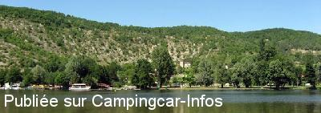
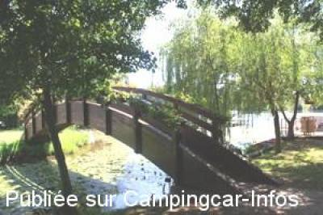
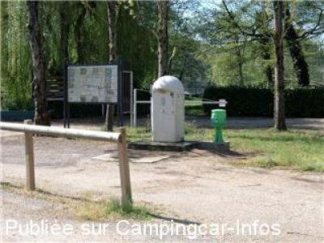
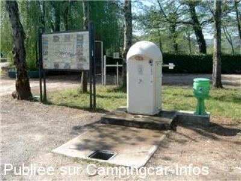
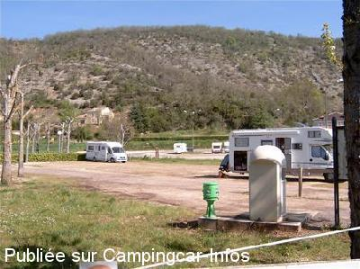

ASN = Aire de services avec stationnement nuit possible de :
LUZECH Caïx
(N° 482)
Accès/adresse :
Le Coual
Berges de Caïx
46140 LUZECH
Berges de Caïx
46140 LUZECH
Latitude : (Nord) 44.49074° Décimaux ou 44° 29′ 26′′
Longitude : (Est) 1.29504° Décimaux ou 1° 17′ 42′′
Tarif : 2015
Nuitée : 4 €
Eau : 2 €
Électricité : 2 €
Taxe de séjour + 13 ans : 0,22 €
Douche : 2 €
Lave-linge ou sèche-linge : 2 €
Type de borne : Autre
Services :


Tous commerces
Autres informations :
Ouvert toute l'année
Pas de services en période de gel
15 emplacements
Tél Office du Tourisme : +33 (0)565 201 786
http://www.caixbasenautique.fr/

Le 31/07/2011 par Base nautique

Le 31/07/2011 par Base nautique

Le 04/05/2004 par lenoir.henri

Le 04/05/2004 par Henri dit Bibi41

Le 04/05/2004 par Henri dit Bibi41
de
R.TV 46
le 10/10/2015 :
un lieux a recommandé,trés bon acceuil,cadre sympa que du bonheur!!!...
un lieux a recommandé,trés bon acceuil,cadre sympa que du bonheur!!!...
de
le vicomte
le 23/08/2015 :
trés bonne station,calme et agréable en bordure de la riviére,acceuil sympa...je recommande ce lieu...
trés bonne station,calme et agréable en bordure de la riviére,acceuil sympa...je recommande ce lieu...
de
sybrub
le 26/08/2013 :
la plage ne nous ayant pas attiré, n'y sommes pas restés autrement que le temps de la pose déjeuner. Située à proximité d'une route apparemment passagère et à l'intérieur d'un camping. Néanmoins un grand parking permet apparemment de passer la nuit et des WC public à proximité
la plage ne nous ayant pas attiré, n'y sommes pas restés autrement que le temps de la pose déjeuner. Située à proximité d'une route apparemment passagère et à l'intérieur d'un camping. Néanmoins un grand parking permet apparemment de passer la nuit et des WC public à proximité
de
marie
le 01/07/2013 :
bonjour,
nous venons ce week end de passer sur l'aire de Luzech, il faut préciser que l'aire n'est pas une aire municipale, mais l'aire appartient à la base de loisir et qu'il faut payer dès votre arrivée la somme de 8euros à ce jour (4e adultes, 2e eau, 2e edf), pensons pêcher mais les accès au lot ne sont pas terribles,, campingcaristement votre,,,
bonjour,
nous venons ce week end de passer sur l'aire de Luzech, il faut préciser que l'aire n'est pas une aire municipale, mais l'aire appartient à la base de loisir et qu'il faut payer dès votre arrivée la somme de 8euros à ce jour (4e adultes, 2e eau, 2e edf), pensons pêcher mais les accès au lot ne sont pas terribles,, campingcaristement votre,,,
de
tournebise
le 21/06/2013 :
aire très agréable accueil sympha. 6€ pour la nuit branchement élec.compris.Je conseille .
aire très agréable accueil sympha. 6€ pour la nuit branchement élec.compris.Je conseille .
de
Looping
le 24/10/2011 :
§
Passé sur cette aire le 20 octobre et reparti aussitôt.
Pour 7,5 € vous avez le droit de stationner sur l'aire à côté des poubelles et des machines du viticulteur voisin ! les facilités du camping fermé ne sont pas accessibles. Les services sont en supplément (2,5 €)
§
Passé sur cette aire le 20 octobre et reparti aussitôt.
Pour 7,5 € vous avez le droit de stationner sur l'aire à côté des poubelles et des machines du viticulteur voisin ! les facilités du camping fermé ne sont pas accessibles. Les services sont en supplément (2,5 €)
de
Véronique
le 31/07/2011 :
§
Bonjour
Nous avons ouvert la base nautique de Caïx (Luzech-46-) le 14 juillet 2011.
Nous proposons sur le site très vert et agréable, dans la vallée du lot, au bord de la rivière : Un camping et une aire de camping car, baignade, tables de pique nique, jeux de plein air, location de canoës, de VTT, croisières avec ou sans dégustation des vins de Cahors à bord du Zéphyr, location de gabarrots (bateau à moteur navigable sans permis) et Le bateau ivre Bar glacier Brasserie Restaurant gourmet ouvert 7j/7 en saison, repas concert tous les jeudis + lundi 15 août
Merci pour les infos qui apparaissent sur votre site. Il y a toutefois des modifications :
L'AIRE D'ACCUEIL CAMPING CAR : tarifs 2011 /7.50 € les 24h avec accès aux sanitaires du camping et électricité, + 0.50 € taxe de séjour/personne + 7 ans / Plein d'eau : 2.50 €
Cordialement
Véronique Alary
vero@naviglot.fr
Naviglot
Base Nautique de Caïx
les berges de Caîx 46140 LUZECH
05 65 20 18 19/ FAX : 05 31 60 37 26/
info@naviglot.fr
www.naviglot.fr
§
Bonjour
Nous avons ouvert la base nautique de Caïx (Luzech-46-) le 14 juillet 2011.
Nous proposons sur le site très vert et agréable, dans la vallée du lot, au bord de la rivière : Un camping et une aire de camping car, baignade, tables de pique nique, jeux de plein air, location de canoës, de VTT, croisières avec ou sans dégustation des vins de Cahors à bord du Zéphyr, location de gabarrots (bateau à moteur navigable sans permis) et Le bateau ivre Bar glacier Brasserie Restaurant gourmet ouvert 7j/7 en saison, repas concert tous les jeudis + lundi 15 août
Merci pour les infos qui apparaissent sur votre site. Il y a toutefois des modifications :
L'AIRE D'ACCUEIL CAMPING CAR : tarifs 2011 /7.50 € les 24h avec accès aux sanitaires du camping et électricité, + 0.50 € taxe de séjour/personne + 7 ans / Plein d'eau : 2.50 €
Cordialement
Véronique Alary
vero@naviglot.fr
Naviglot
Base Nautique de Caïx
les berges de Caîx 46140 LUZECH
05 65 20 18 19/ FAX : 05 31 60 37 26/
info@naviglot.fr
www.naviglot.fr
de
buidin fabrice
le 28/07/2010 :
Nous sommes passés au mois de juillet. Aire super sympa, je la recommande à tous, surtout pour le rapport qualité prix !
Nous sommes passés au mois de juillet. Aire super sympa, je la recommande à tous, surtout pour le rapport qualité prix !
de
manu25000
le 03/05/2010 :
De passage fin avril, l'aire est toujours aussi sympathique. Pour 7,50 € électricité comprise, il n'y a rien à redire. Accueil avec une demi de vin de Cahors de la bannière. A visiter et acheter le vin à la cave ( très bon et pas trop cher).
De passage fin avril, l'aire est toujours aussi sympathique. Pour 7,50 € électricité comprise, il n'y a rien à redire. Accueil avec une demi de vin de Cahors de la bannière. A visiter et acheter le vin à la cave ( très bon et pas trop cher).
de
Pierrette
le 12/06/2009 :
Etant donné que le camping disposait de suffisamment de places, le gérant nous a proposé de nous y installer pour 7.50€, électricité comprise et à l'ombre alors que l'aire de services est en plein soleil. Accueil très sympathique. Le gérant vous demande le soir si vous désirez du pain pour le lendemain car il va tous les matins à la boulangerie. N'oubliez pas en effet d'aller déguster les vins ainsi que le "Ratafia" au Domaine la Banière juste à côté. A faire également un petit tour en bateau sur le Lot de 1h30 pour seulement 6.50€. Jeune accompagnatrice et pilote du bateau très sympathiques. §
Etant donné que le camping disposait de suffisamment de places, le gérant nous a proposé de nous y installer pour 7.50€, électricité comprise et à l'ombre alors que l'aire de services est en plein soleil. Accueil très sympathique. Le gérant vous demande le soir si vous désirez du pain pour le lendemain car il va tous les matins à la boulangerie. N'oubliez pas en effet d'aller déguster les vins ainsi que le "Ratafia" au Domaine la Banière juste à côté. A faire également un petit tour en bateau sur le Lot de 1h30 pour seulement 6.50€. Jeune accompagnatrice et pilote du bateau très sympathiques. §
de
GILLES EGRET
le 12/10/2008 :
Bonjour. Camping-cariste depuis peu, nous y avons fait notre 2ème bivouac. Aire sympa et gratuite et calme, seules les vidanges sont possibles en cette saison. Allez faire connaissance avec M. BORREDON au DOMAINE LA BANIERE (contigu à l'aire), il se fera un plaisir de vous faire déguster ses vins et de vous parler de sa vigne.
Bonjour. Camping-cariste depuis peu, nous y avons fait notre 2ème bivouac. Aire sympa et gratuite et calme, seules les vidanges sont possibles en cette saison. Allez faire connaissance avec M. BORREDON au DOMAINE LA BANIERE (contigu à l'aire), il se fera un plaisir de vous faire déguster ses vins et de vous parler de sa vigne.
de
Michel JACQUET
le 29/06/2008 :
En bordure du Lot, aire toujours aussi sympa, très spacieuse, calme. 7€50 avec tous les services attendus. Très belle région.
En bordure du Lot, aire toujours aussi sympa, très spacieuse, calme. 7€50 avec tous les services attendus. Très belle région.
de
didal
le 09/10/2007 :
Aire fermée le 03/09/2007, mais l'accès reste possible, y compris sur le camping. Les sanitaires publiques situées juste à côté sont ouverts.
Aire fermée le 03/09/2007, mais l'accès reste possible, y compris sur le camping. Les sanitaires publiques situées juste à côté sont ouverts.
de
Lotelain
le 07/10/2007 :
Encore mieux, après le 15 Septembre c'est gratuit !
Encore mieux, après le 15 Septembre c'est gratuit !